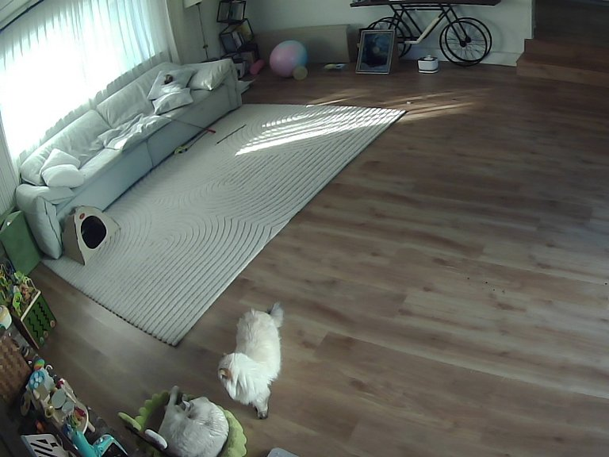
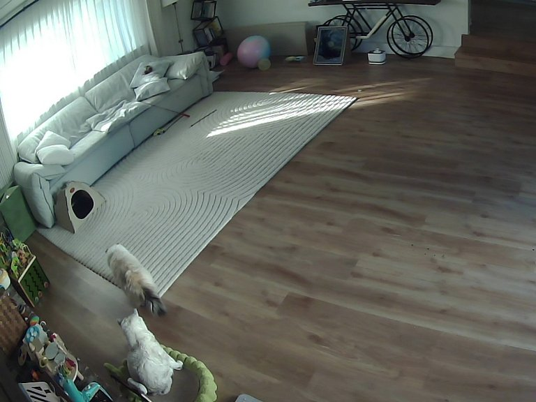
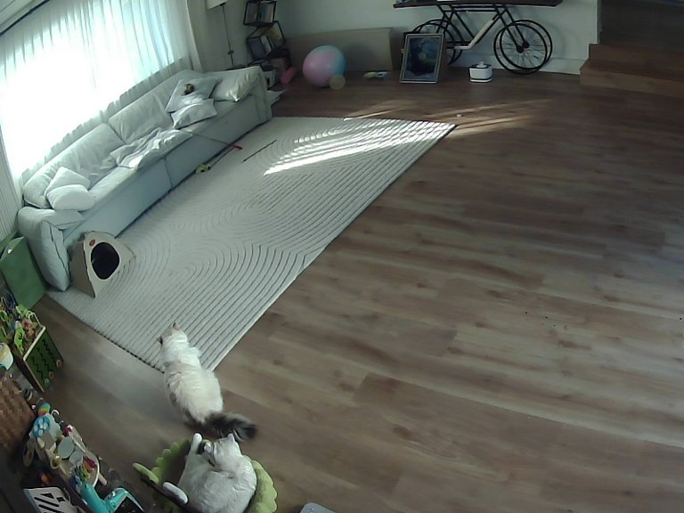
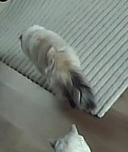
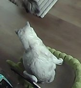
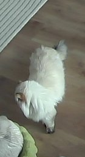
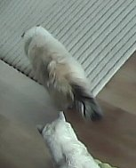

What does the agent actually do?
It looks for itself: frames, then crops, then a verdict.
Turn 1
Pulls 4 frames
local__get_frame ×4 · 10.4 s



Turn 2
Zooms into each box
local__get_frame(box=…) ×4 · 15.5 s




Turn 3
Answers, with reasons
E4-T2 →
keep_original
E5-T2 →
keep_original
E6-T4 →
link_continuation
E7-P6 →
merge
“Bed cat: cool white, smooth outline = Qb. Rug cat: fuzzy halo, plume tail = Qbo.”
Agent run 20261104-140629 · Muse Spark 1.3 · 3 turns, 8 tool calls · images = the exact frames and crops it fetched
Agentic CV · Meta Muse Spark